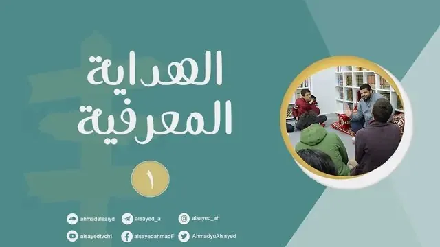
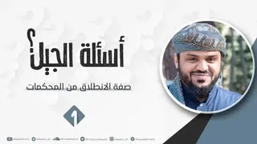
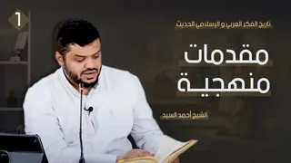

7 محاضرات
سلسلة مرئية
الهداية المعرفية || للجيل الصاعد
آخر تحديث 20 أكتوبر 2021

7 محاضرات
الهداية المعرفية || سلسلة جديدة للجيل الصاعد ||
وهي متعلقة بموضوع يجمع بين الأهمية البالغة وبين الصعوبة والتعقيد؛ ألا وهو: مصادر التلقي والمعرفة والعلاقة بينها وثمرة المعرفة وسبل الاهتداء بها.
الهداية المعرفية || سلسلة جديدة للجيل الصاعد ||
وهي متعلقة بموضوع يجمع بين الأهمية البالغة وبين الصعوبة والتعقيد؛ ألا وهو: مصادر التلقي والمعرفة والعلاقة بينها وثمرة المعرفة وسبل الاهتداء بها.
وعلى الرغم من صعوبتها فقد سرني كثيرا مستوى الطلاب وإدراكهم لهذه المعاني وتفاعلهم معها -وقد تفاجؤون بذلك من خلال الفيديو-،
ومن أسباب هذا الفهم والإدراك -بفضل الله وتوفيقه وتسديده-:
١) البناء المعرفي السابق والذي لا يزال مستمرا.
٢) اللغة المعرفية المشتركة التي سهل من خلالها نقل المستوى المكثف من المعارف.
٣) الجو التعليمي المحبب إليهم.
قراءة المزيد

شاهد السلسلة على يوتيوب
الحلقات
0 حلقات
تابع المشاهدة
سلاسل أخرى
غيث السنة
5 محاضرات · 14 أكتوبر 2021

أسئلة الجيل
7 محاضرات · 4 أكتوبر 2021

تاريخ الفكر العربي والإسلامي الحديث
4 محاضرات · 10 سبتمبر 2021
